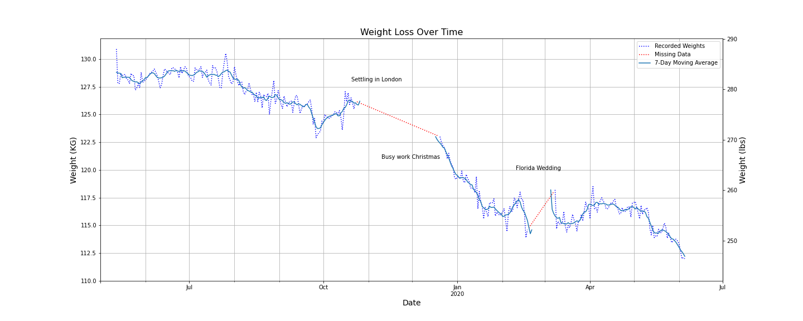
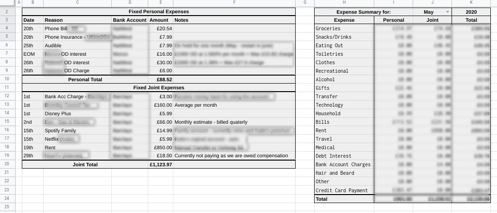

An exploration of my daily weight log. Using Python, within a Google Colab Notebook, I import, clean, manipulate and visualise my weight log data. The result is a confirmation of my weight loss, as well as some additional investigation into other features. I will be adding some forecasting and modelling in the future.
The first post of many exploring my personal finance system and how Python can help me eplore my situation further. This article sets up the premise for the project, including explaining a little about the current system, and some of the questions I would like answers to.

How I use Google Sheets to track my personal finances. I look at why I need the system, how it started and has evolved to meet my needs, and what extra features I'd like to add in the future. I breakdown each sheet in the workbook and how they interact, as well as how the workbook interacts with other services.
I've always enjoyed Sudoku, but sometimes I'd come up against one I couldn't solve. I decided to build a porgram to check my answers and help me figure out the solutions.
This uses a simple back-tracking alogrithm to solve a 2D-array input. Built on this is a CV2 image recognition app that reads the image of a Sudoku puzzle into a 2D-array.
Example Article Code -->